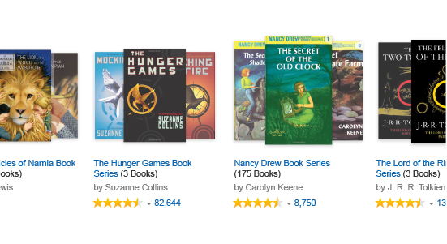

Amazon - Book Series Pages
Summer 2014
Role: UX/UI designer

I worked on a number of projects for Amazon including UI designs for the buy box, product images, and choose-a-size features for the universal shopping experience team. I pitched ideas for Prime Wardrobe and explored solutions for fit issues with the fashion team, and I worked on designs for textbook and book series pages for the books team. A lot of this work is still under NDA, but I can focus on the book series pages which are now live as an example of how I worked while I was there.
Problem
Many popular books are part of a series, yet Amazon didn’t have an easy way for the shopper to see and purchase each book in a series. The proposed solution was to create a page where all the books in a series could be seen at once and added to a shopper’s cart without interruption.
Process
When I was introduced to the project, the team had drafts of the visual design, but they were incomplete and the UX had not been thought through. In order to insure the project’s success, I asked a lot of questions up front, learning about the business motivation and who needed to buy-in in order for it to succeed. I also listened to each feature request and asked clarifying questions, so I could understand the book business and audience I was designing for.
Example of a user flow
Once up to speed, I went to work on the UX design creating user flows and interactive mock-ups. I adapted to Amazon’s tools and review process so that my deliverables made the team looked their best during presentations. When constructing the user flows, I explored the use cases from beginning to end. Consideration went into such things as the desktop versus mobile experience, showing different states of the UI and considering different types of content. This deep dive into the user flows ensured that any previously unforeseen issues could be brought to the team for resolution.

Example of an interactive mock-up with a list of features and states built on the left
Part of my role was to support the work of the Project Manager as she championed this project across internal teams and stakeholders. I helped explain and defend our design in meetings and addressed the concerns of other teams, incorporating feedback that would make our product more successful cross-team. I worked with the technical constraints of the search team, getting on the calendar of a search image expert to answer questions on how my designs should comply with their technology. These efforts went a long way to unblock the project and show stakeholders that it was viable to launch. I also worked with an international dev team, communicating effectively, creating image assets to their specs and meeting their schedule.
Results
When my involvement in the project ended, I handed over design and UX files that were in good order. I made a series of deliverables that were available for all team members to view and could be relied upon as documentation of all the latest design decisions. The feature went live a year later in 2015. The latest version can be seen live on Amazon.com.

{kind=link}
{kind=link}